太空狗萊卡
共 81 幕分鏡 · 預估成片總長度：12分48秒 (768.1s) · 自動生成於 20261007_story
🎞️ 各場景分鏡與語音審查
001_shot_1 · 大家好
🖼️ 畫中畫 PiP
時長: 11.09s

疊加參考圖 (PiP)：

002_shot_2 · 官方的宣傳冊把她描繪成全人類的英
時長: 12.25s

003_shot_3 · 從一開始就被悄悄印上了單程死刑
時長: 10.97s

004_shot_4 · 時間倒回到1957年的深秋
時長: 8.73s

005_shot_5 · 就在那一年的10月4日
🖼️ 畫中畫 PiP
時長: 10.69s

疊加參考圖 (PiP)：
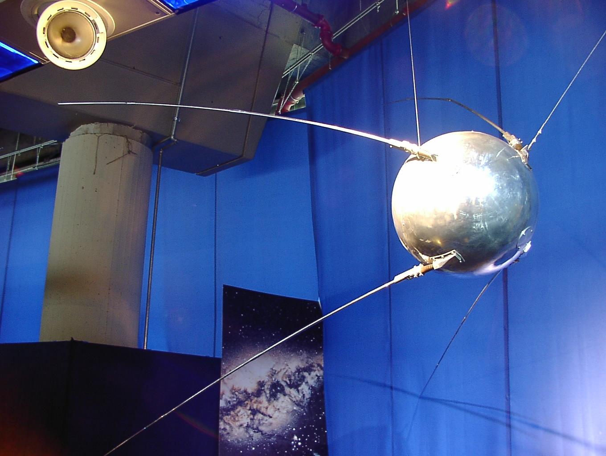
006_shot_6 · 但它發出的嗶嗶聲
時長: 9.64s

007_shot_7 · 眼看全球輿論都在驚呼蘇聯的勝利
🖼️ 畫中畫 PiP
時長: 13.22s

疊加參考圖 (PiP)：
008_shot_8 · 再向全世界丟出一個更震撼的超級奇
時長: 8.81s

009_shot_9 · 四周之內必須再發射一顆更大的衛星
時長: 6.97s

010_shot_10 · 負責這項任務的總工程師科羅廖夫
🖼️ 畫中畫 PiP
時長: 9.21s

疊加參考圖 (PiP)：
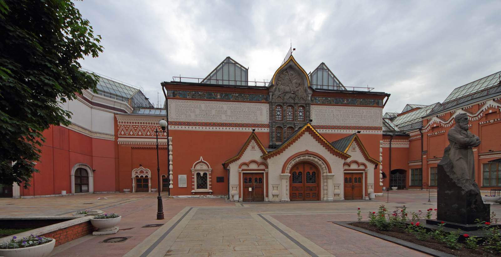
011_shot_11 · 在嚴寒的科雷馬苦役營裡差點丟掉性
時長: 8.17s

012_shot_12 · 甚至連發射地點丘拉坦荒原
🖼️ 畫中畫 PiP
時長: 12.28s
無畫面
疊加參考圖 (PiP)：
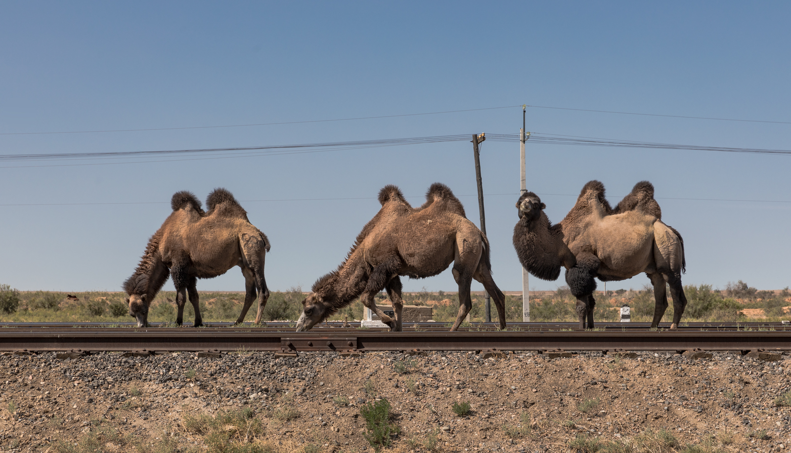
013_shot_13 · 更精密的原定科學衛星根本趕不及完
時長: 8.81s

014_shot_14 · 在短短二十多天裡拼湊出一顆帶著活
時長: 10.81s

015_shot_15 · 這隻狗就是後來被全世界熟知的萊卡
🖼️ 畫中畫 PiP
時長: 8.09s
無畫面
疊加參考圖 (PiP)：
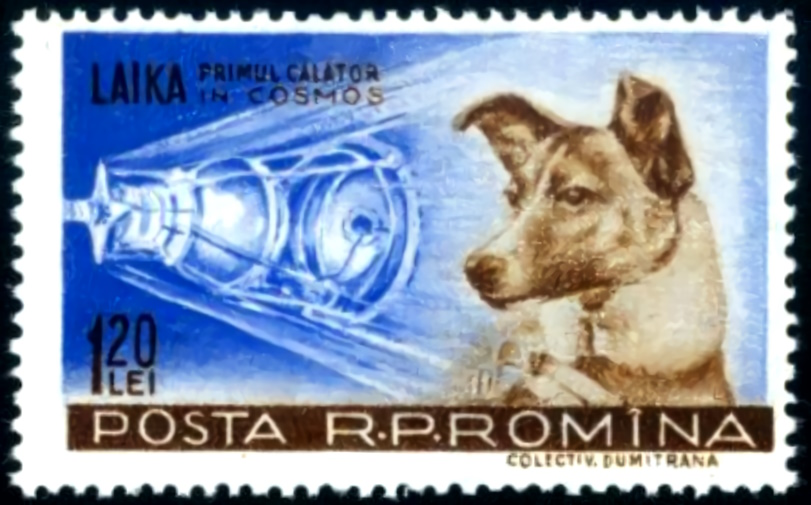
016_shot_16 · 當時莫斯科航空醫學研究所的專家們
🖼️ 畫中畫 PiP
時長: 12.42s
無畫面
疊加參考圖 (PiP)：
017_shot_17 · 專家們的邏輯聽起來非常冷血又務實
時長: 11.94s

018_shot_18 · 他們的篩選標準苛刻得像在挑選機器
時長: 12.22s

019_shot_19 · 第二體重必須卡在六公斤左右
時長: 6.4s

020_shot_20 · 第三毛色必須偏淺
時長: 6.4s

021_shot_21 · 候選名單最後留下了三隻狗
時長: 7.0s

022_shot_22 · 另外兩隻分別叫阿爾比娜和穆什卡
時長: 9.01s

023_shot_23 · 研究人員私下捨不得讓一位母親去送
時長: 7.57s

024_shot_24 · 萊卡最終被選中不是因為她最幸運
時長: 9.53s

025_shot_25 · 為了讓她適應發射
🖼️ 畫中畫 PiP
時長: 9.41s
無畫面
疊加參考圖 (PiP)：
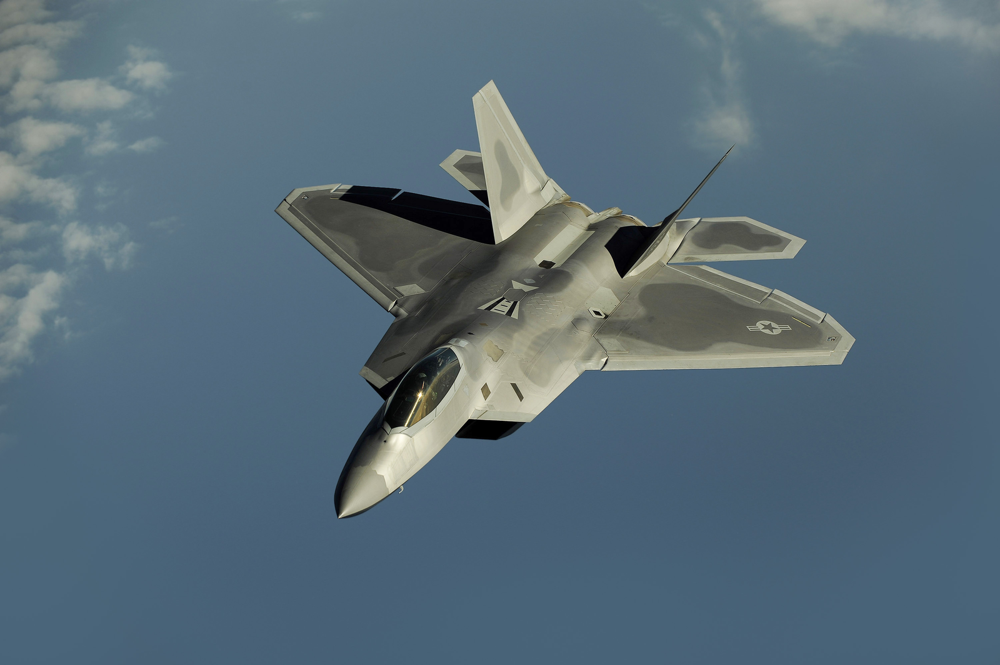
026_shot_26 · 還把她關進一天比一天更窄的小鐵盒
時長: 7.37s

027_shot_27 · 她身上被切開皮膚埋入監測呼吸和血
🖼️ 畫中畫 PiP
時長: 8.77s
無畫面
疊加參考圖 (PiP)：
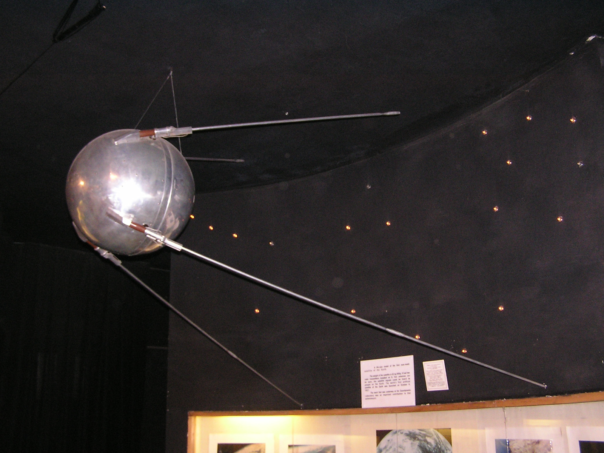
028_shot_28 · 她的安靜和乖巧
時長: 4.6s

029_shot_29 · 然而當時所有人都心知肚明
🖼️ 畫中畫 PiP
時長: 6.2s

疊加參考圖 (PiP)：
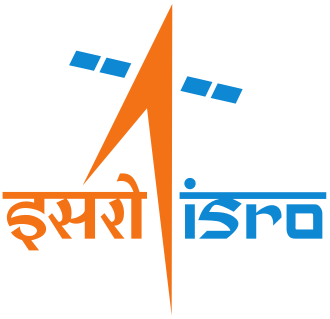
030_shot_30 · 運載火箭是龐大的阿爾七型洲際飛彈
🖼️ 畫中畫 PiP
時長: 9.41s
無畫面
疊加參考圖 (PiP)：
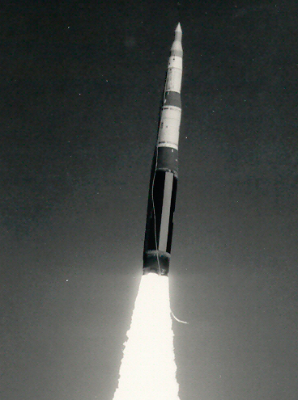
031_shot_31 · 萊卡身上套著金屬鎖鏈和挽具
🖼️ 畫中畫 PiP
時長: 8.21s
無畫面
疊加參考圖 (PiP)：

032_shot_32 · 艙內配備了化學製氧機和二氧化碳吸
時長: 8.37s

033_shot_33 · 按照紙面上的工程計算
🖼️ 畫中畫 PiP
時長: 13.01s
無畫面
疊加參考圖 (PiP)：
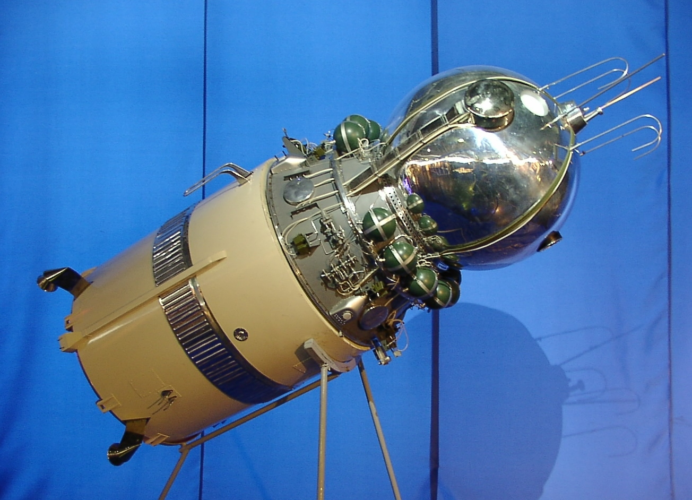
034_shot_34 · 但這套看似周密的維持系統背後
時長: 10.93s

035_shot_35 · 因為冷戰的科學家們當時只想知道一
時長: 12.22s

036_shot_36 · 動物會不會在幽閉恐懼中當場發瘋
時長: 10.58s

037_shot_37 · 但因為紅場閱兵的死線一天天逼近
🖼️ 畫中畫 PiP
時長: 16.39s
無畫面
疊加參考圖 (PiP)：

038_shot_38 · 在正式發射前的那段日子
🖼️ 畫中畫 PiP
時長: 9.21s

疊加參考圖 (PiP)：

039_shot_39 · 在發射前最後一個夜晚
時長: 7.8s

040_shot_40 · 讓自己的孩子撫摸她柔軟的毛皮
時長: 5.0s

041_shot_41 · 多年之後這位老科學家在回憶錄裡寫
時長: 9.35s

042_shot_42 · 另一位負責訓練的女性科研人員科托
時長: 11.58s

043_shot_43 · 但溫柔的眼淚並沒有改變冰冷的現實
時長: 10.97s

044_shot_44 · 因為發射前各項設備調試極其緩慢
時長: 7.57s

045_shot_45 · 11月3日黎明前夕
時長: 10.49s

046_shot_46 · 清晨升空那一刻
🖼️ 畫中畫 PiP
時長: 8.21s

疊加參考圖 (PiP)：
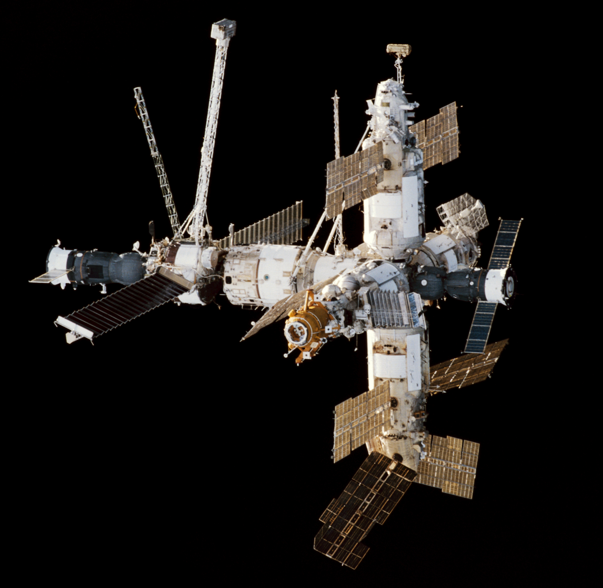
047_shot_47 · 從平時每分鐘一百零三次瘋狂飆升到
時長: 8.32s

048_shot_48 · 當火箭衝出大氣層進入失重狀態時
時長: 12.18s

049_shot_49 · 緊接著致命的工程災難爆發了
🖼️ 畫中畫 PiP
時長: 10.97s

疊加參考圖 (PiP)：
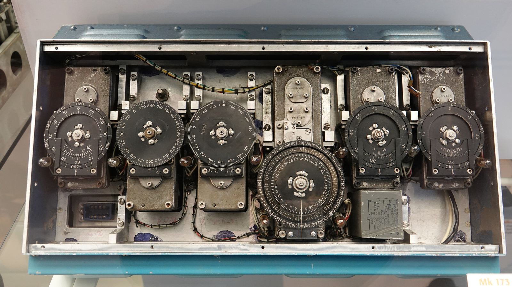
050_shot_50 · 原本脆弱的溫控散熱系統徹底癱瘓
時長: 11.38s

051_shot_51 · 而在幾百公里外的地球表面
🖼️ 畫中畫 PiP
時長: 11.21s

疊加參考圖 (PiP)：
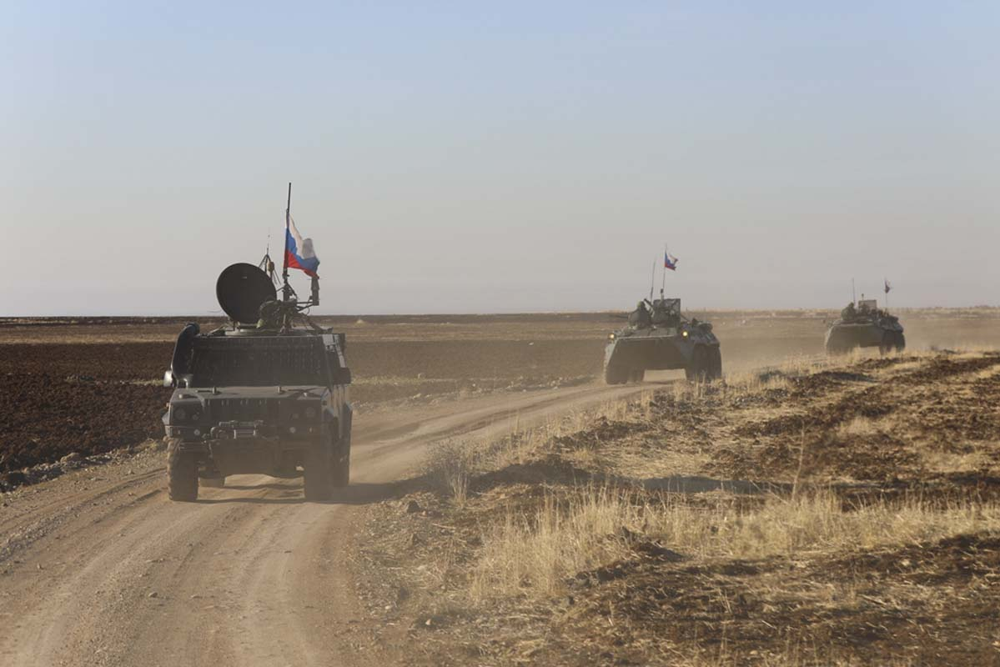
052_shot_52 · 宣稱這隻名叫萊卡的太空狗狀態極佳
時長: 10.41s

053_shot_53 · 有的官方發言人說萊卡在太空裡優雅
時長: 7.97s

054_shot_54 · 有的版本甚至說她在第七天吃下了那
時長: 7.57s

055_shot_55 · 這些互相打臉的謊言被寫進了蘇聯各
🖼️ 畫中畫 PiP
時長: 10.73s
無畫面
疊加參考圖 (PiP)：
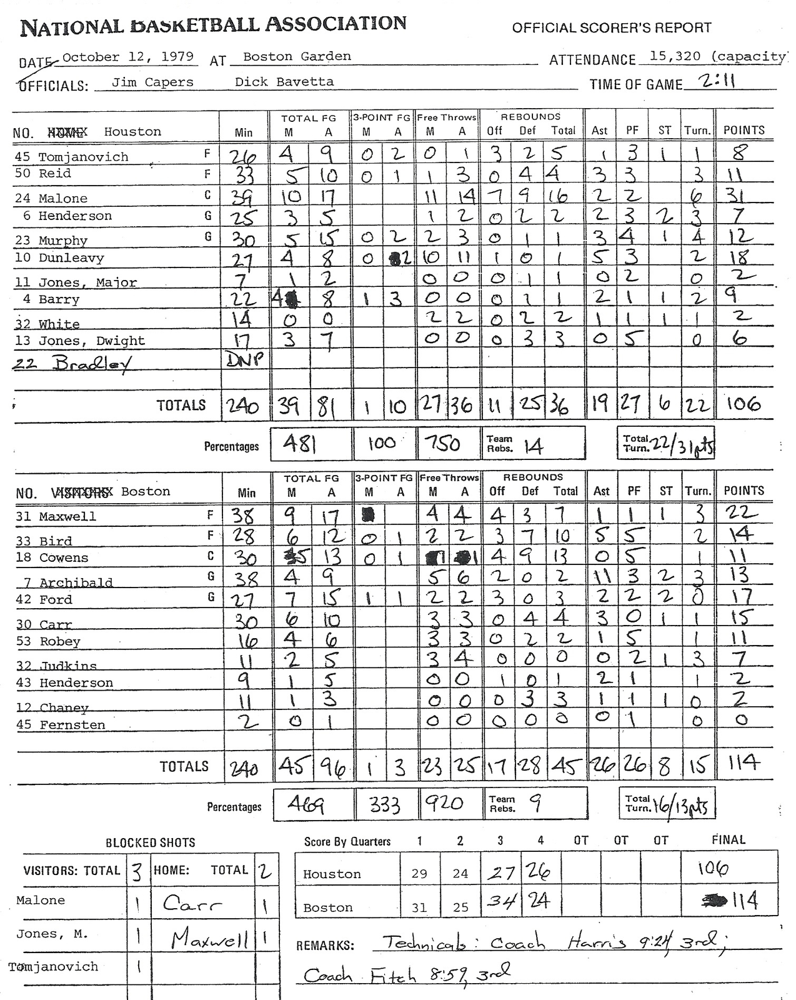
056_shot_56 · 當年親歷任務的科學家馬拉申科夫才
時長: 11.41s

057_shot_57 · 在發射升空僅僅五到七個小時之後
時長: 10.78s

058_shot_58 · 原本計畫獲取長期失重生化數據的科
時長: 6.72s

059_shot_59 · 但對於紅場看台上的政客來說
🖼️ 畫中畫 PiP
時長: 9.69s

疊加參考圖 (PiP)：
060_shot_60 · 他們已經成功搶在美國人前面
時長: 6.4s

061_shot_61 · 在那個沒有互聯網的封閉年代
🖼️ 畫中畫 PiP
時長: 10.41s

疊加參考圖 (PiP)：
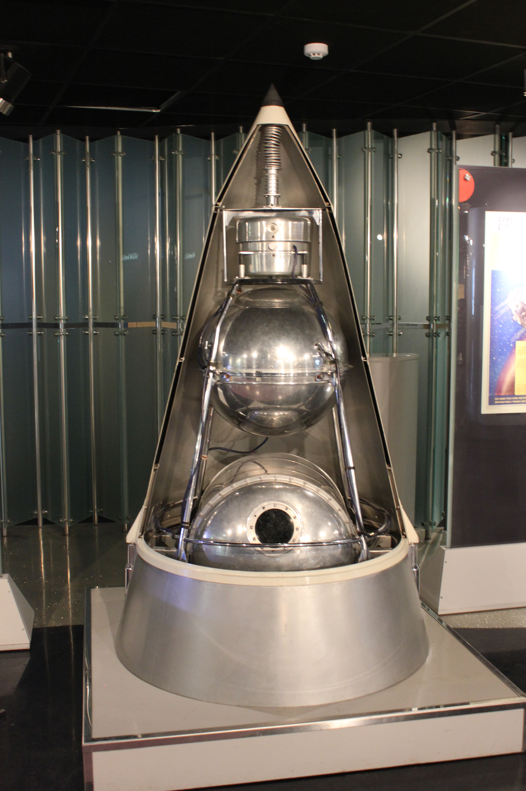
062_shot_62 · 國營工廠生產了印著太空狗的香菸和
時長: 12.18s

063_shot_63 · 而官方報紙只能繼續自欺欺人
🖼️ 畫中畫 PiP
時長: 7.16s

疊加參考圖 (PiP)：
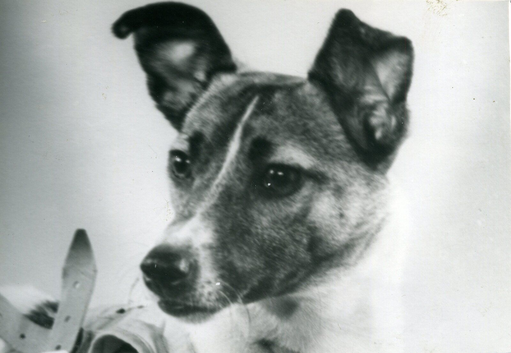
064_shot_64 · 承認她是消耗品
時長: 9.29s

065_shot_65 · 於是整個宣傳機器只能合謀
時長: 5.68s

066_shot_66 · 西方的動物保護協會雖然在倫敦大使
🖼️ 畫中畫 PiP
時長: 13.18s
無畫面
疊加參考圖 (PiP)：
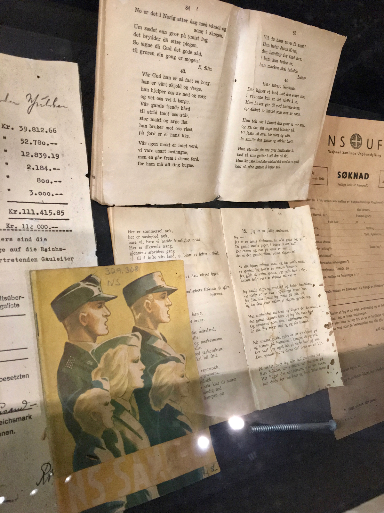
067_shot_67 · 在掌聲和歡呼聲的背後
時長: 8.16s

068_shot_68 · 繞著我們美麗的地球整整旋轉了一百
時長: 8.57s

069_shot_69 · 直到1958年4月14日
時長: 8.85s

070_shot_70 · 如果技術極限真的注定了回不來
時長: 6.79s

071_shot_71 · 僅僅在萊卡犧牲兩年多後的1960
🖼️ 畫中畫 PiP
時長: 13.74s
無畫面
疊加參考圖 (PiP)：

072_shot_72 · 安然無恙地活著返回了地球
🖼️ 畫中畫 PiP
時長: 6.4s
無畫面
疊加參考圖 (PiP)：
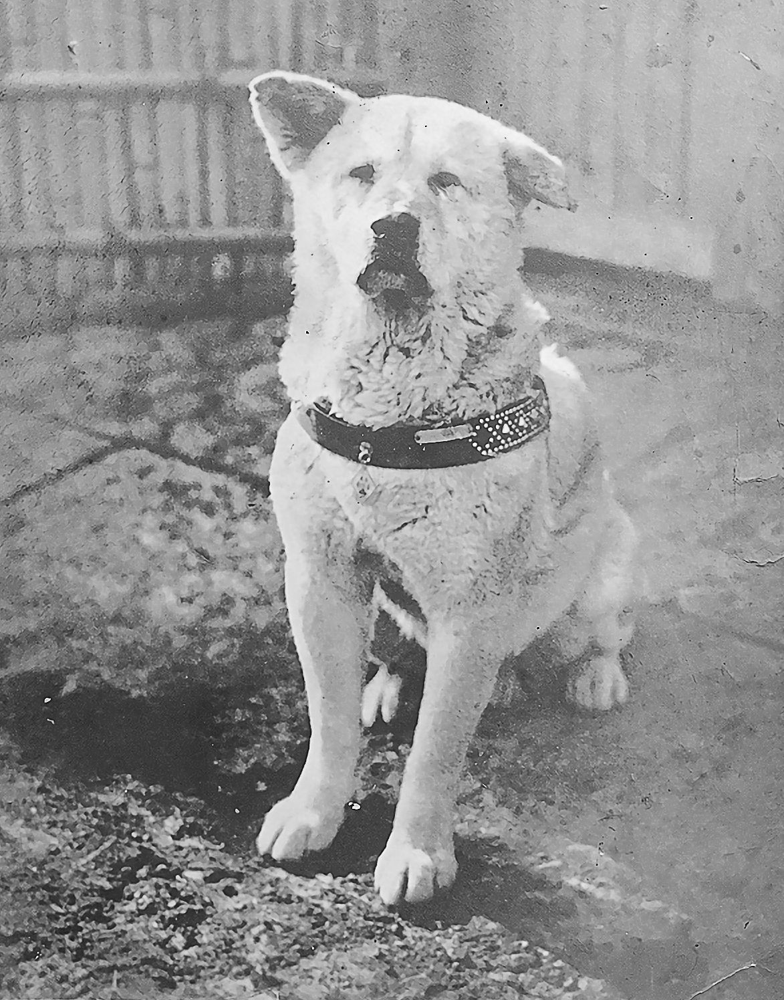
073_shot_73 · 赫魯雪夫還把其中一隻送給了美國總
🖼️ 畫中畫 PiP
時長: 9.97s

疊加參考圖 (PiP)：
074_shot_74 · 萊卡之所以必須死
時長: 7.12s

075_shot_75 · 1998年曾經主導這項任務的高級
🖼️ 畫中畫 PiP
時長: 11.33s

疊加參考圖 (PiP)：
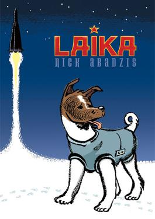
076_shot_76 · 根本不足以用那隻狗的死亡來為自己
時長: 7.61s

077_shot_77 · 2008年4月莫斯科那座軍事醫學
🖼️ 畫中畫 PiP
時長: 11.14s

疊加參考圖 (PiP)：
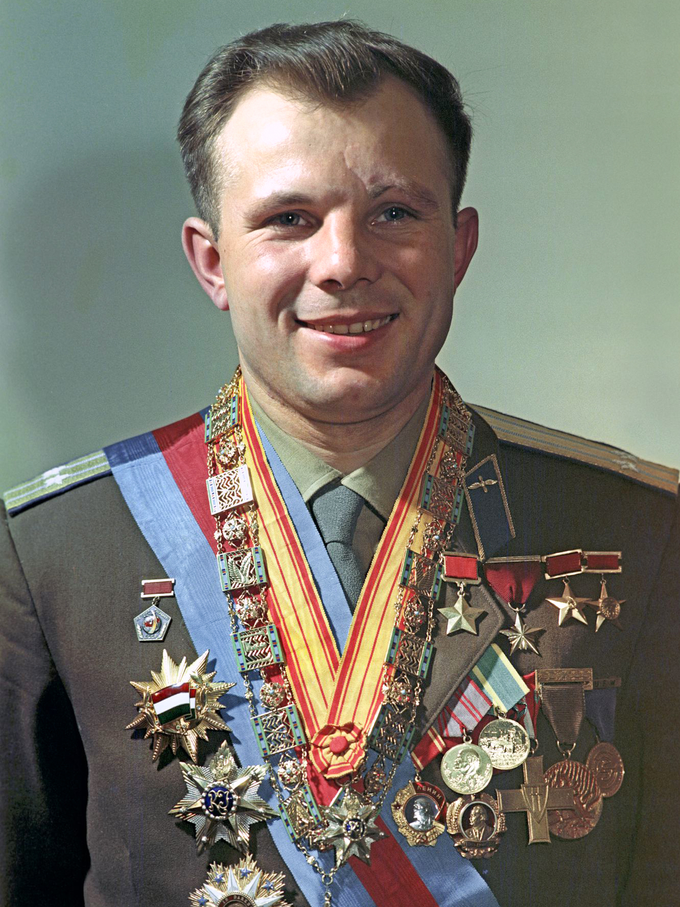
078_shot_78 · 站在一隻由火箭線條托起的人類手掌
時長: 11.18s

079_shot_79 · 如果你生活在那個狂熱的1957年
時長: 12.5s

080_shot_80 · 歡迎在評論區留下你的看法
時長: 8.04s

081_shot_81 · 我們下一期故事
時長: 5.2s